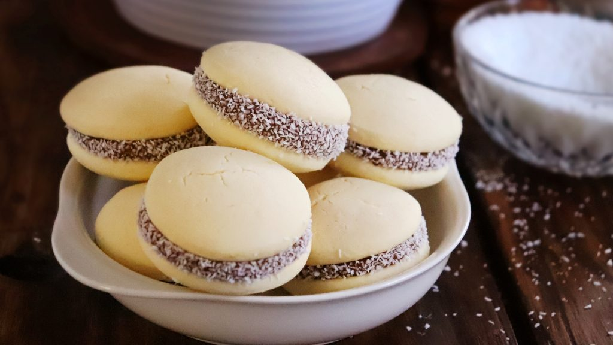
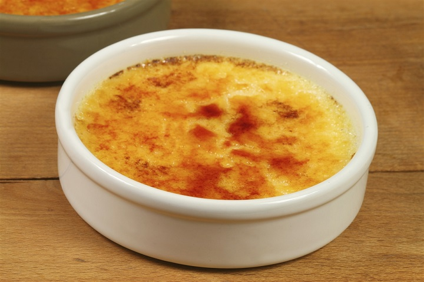

Alfajores de maicena
Los alfajores en Argentina son un ícono de las golosinas, existen de todos los sabores y todas las manera imaginables pero hay uno que es el más tradicional de todos… el Alfajor de Maicena.
Ver receta
Pasta frola
Esta fiel representante de la pastelería vernácula es pasión de multitudes. Podés encontrar de dulce de batata, de leche o la tradicional con dulce de membrillo.
Ver receta

Creme brulee
La créme brûlée es una especialidad de la repostería francesa. Literalmente se traduce como crema quemada, y es que tradicionalmente una fina capa de azúcar tostada en su superficie le da un punto crujiente que la hace deliciosa.
Ver receta